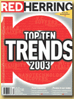

|  |
100 ns) PMT digitizer modules; these are briefly discussed in connection with the HADRON detector series. . Software Resources in Nuclear Physics Software Resources for Data Aquisition and Data Analysis in Nuclear Physics This entry will offer locators to resources on the WWW which give information about existing and and future software products relevant to data aquisition and data analysis in nuclear physics. As of June 30, 2000 this web site will no longer be under maintenance. Provides information about physics analysis software, computing, data, and people at Delphi. |